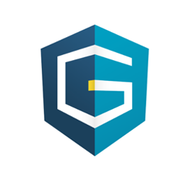
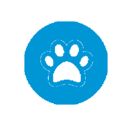

Mis proyectos
Guardianes
Esta página para la empresa Guardianes del Voto fue creada con la herramienta de Wordpress. Elaborada en Enero de 2019, si quieres conocerla puedes hacerlo dandole click aqui:
GUARDIANES DEL VOTOCOENER

Esta página fue creada para el Centro de Orientación de Energía COENER con la herramienta de Wix. Elaborada en Septiembre de 2018, si quieres conocerla puedes hacerlo dandole click aqui:
COENERADIVINADOR
Este Adivinador de Animales ue creado como parte de la evalución del curso de Estructuras de Datos programado en el lenguaje Java. Elaborada en Julio de 2019, si quieres conocerla puedes hacerlo dandole click aqui:
ADIVINADOR